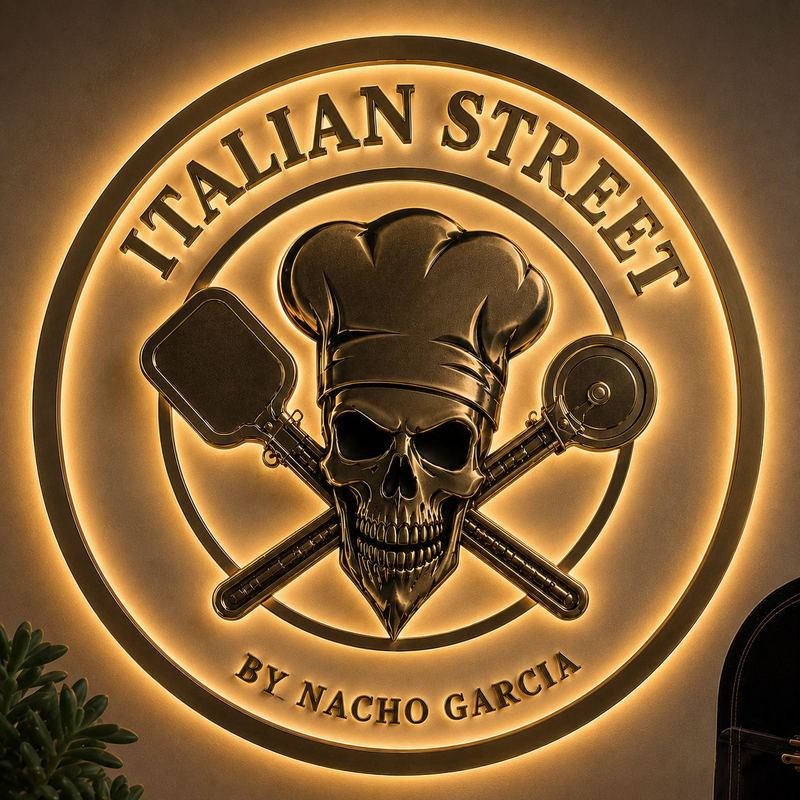
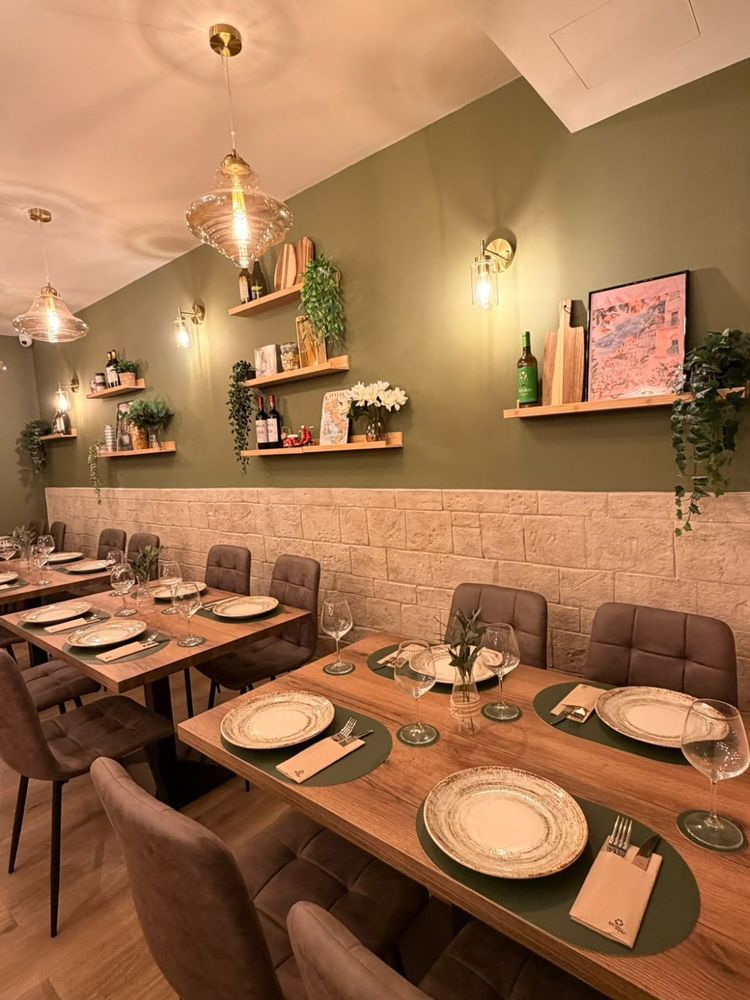

La puerta verde
Piedra, farolillos y dos olivos a la entrada. Aquí empieza Italia.
Benvenuti
Dalla strada italiana alla tua tavola
Cucina italiana · Pizza romana
Pizza romana de fermentación lenta, pasta a tu gusto y recetas al horno de toda la vida. De la calle italiana a tu mesa, en Málaga.
La carta
Importante: para cualquier alergia o intolerancia, consulta a nuestro personal antes de pedir. Algunos productos pueden contener trazas por contaminación cruzada. vegetariano · picante.
Fuera de carta
Pregunta al camarero: ¡vuelan!
Il viaggio della pasta
Cada salsa tiene su tierra. Viaja por Italia, descubre de dónde viene cada receta y combínala con la pasta que quieras.
Elige la pasta · ★ la que recomienda la casa
El local
Paredes verde oliva, piedra, madera y luz cálida. Acompáñanos en un paseo por Italian Street, tu restaurante italiano en Palma-Palmilla, Málaga.
Piedra, farolillos y dos olivos a la entrada. Aquí empieza Italia.

Nuestro chef calavera, con la pala y el cortapizzas, se enciende cada noche.

Verde oliva, piedra y madera. Mesas largas bajo lámparas de cristal, como en una trattoria de barrio.

Vino italiano, tarros de pasta, una Vespa roja y el mapa de Italia: la despensa a la vista.

Con amigos, en pareja o en familia: hay tronas para los más pequeños.
¿Ya has venido? Tu opinión nos ayuda muchísimo a que nos conozcan más personas.
Horario y reservas
Reservas solo por WhatsApp o por teléfono. Te recomendamos reservar con antelación, sobre todo los fines de semana.